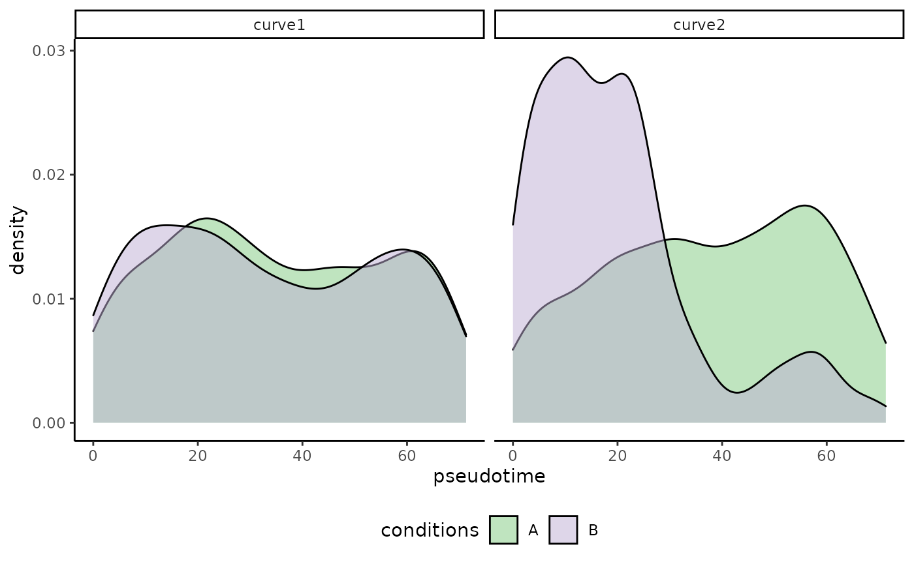

condiments
Hector Roux de Bézieux
26 February , 2021
Source:vignettes/condiments.Rmd
condiments.RmdInitial pre-processing
Generating a synthetic dataset
We will use a synthetic dataset to illustrate the functionalities of the condiments package. We start directly with a dataset where the following steps are assumed to have been run:
- Obtaining count matrices for each setting (i.e. each condition).
- Integration and normalization between the conditions.
- Reduced Dimension Estimations
- (Clustering)
library(condiments)
library(slingshot)## Loading required package: princurve##
## Attaching package: 'dplyr'## The following objects are masked from 'package:stats':
##
## filter, lag## The following objects are masked from 'package:base':
##
## intersect, setdiff, setequal, union## Loading required package: viridisLite
library(ggplot2)
set.seed(2071)
theme_set(theme_classic())
data("toy_dataset", package = "condiments")
df <- toy_dataset$sdAs such, we start with a matrix df of metadata the cells: coordinates in a reduced dimension space (Dim1, Dim2), a vector of conditions assignments conditions (A or B) and a lineage assignment.
Vizualisation
We can first plot the cells on the reduced dimensions
p <- ggplot(df, aes(x = Dim1, y = Dim2, col = conditions)) +
geom_point() +
scale_color_brewer(type = "qual")
p
We can also visualize the underlying skeleton structure of the two conditions.
p <- ggplot(df, aes(x = Dim1, y = Dim2, col = conditions)) +
geom_point(alpha = .5) +
geom_point(data = toy_dataset$mst, size = 2) +
# We do two groups here to represent the two paths in the tree structure
geom_path(data = toy_dataset$mst %>% filter(Dim2 >= 0), size = 1.5) +
geom_path(data = toy_dataset$mst %>% filter(Dim2 <= 0), size = 1.5) +
scale_color_brewer(type = "qual") +
facet_wrap(~conditions)
p
Differential Topology
Exploratory analysis
We can then compute the imbalance score of each cell using the imbalance_score function.
scores <- imbalance_score(Object = df %>% select(Dim1, Dim2) %>% as.matrix(),
conditions = df$conditions)
df$scores <- scores$scores
df$scaled_scores <- scores$scaled_scoresThere are two types of scores. The raw score is computed on each cell and looks at the condition distribution of its neighbors compared the the overall distribution. The size of the neighborhood can be set using the k argument, which specify the number of neighbors to consider. Higher values means more local imbalance.
ggplot(df, aes(x = Dim1, y = Dim2, col = scores)) +
geom_point() +
scale_color_viridis_c(option = "C")
The local scores are quite noisy so we can then use local smoothers to smooth the scores of individual cells. The smoothness is dictated by the smooth argument.
ggplot(df, aes(x = Dim1, y = Dim2, col = scaled_scores)) +
geom_point() +
scale_color_viridis_c(option = "C")
As could be guessed from the original plot, the bottom lineage shows a lot of imbalance while the top one does not. The imbalance score can be used to check whether the integration has been successful (at least some regions should be balanced), or to identify the regions of imbalance for further analyses.
Trajectory Inference
The first step of our workflow is to decide whether or not to infer the trajectories separately or not. On average, it is better to infer a common trajectory, since a) this allow for a wider range of downstream analyses, and b) more cells are used to estimate the trajectory. However, the condition effect might be strong enough to massively disrupt the differentiation process, which would require fitting separate trajectories.
The topologyTest assess the quality of the common trajectory inference done by slingshot and test whether we should fit a common or separate trajectory. This test relies on repeated permutations of the conditions followed by trajectory inference so it can take a few seconds.
ggplot(df, aes(x = Dim1, y = Dim2, col = cl)) +
geom_point()
## Using full covariance matrix
## Takes ~1mn30s to run
topologyTest(sds = sds, conditions = df$conditions)## Generating permuted trajectories## Running KS-mean test## method thresh statistic p.value
## 1 KS_mean 0.01 0 1The test fails to reject the null that we can fit a common trajectory so we can continue with the sds object.
Differential Progression
Even though we can fit a common trajectory, it does not mean that the cells will differentiate similarly between the conditions. The first question we can ask is: for a given lineage, are cells equally represented along pseudotime between conditions?
df$pst1 <- slingPseudotime(sds)[, 1]
df$pst2 <- slingPseudotime(sds)[, 2]Visualization
ggplot(df, aes(x = pst1, fill = conditions)) +
geom_density(alpha = .5) +
scale_fill_brewer(type = "qual")+
labs(x = "Pseudotime for lineage 1", title = "Pseudotime distribution for lineage 1")
The pseudotime distributions are identical across lineages.
ggplot(df, aes(x = pst2, fill = conditions)) +
geom_density(alpha = .5) +
scale_fill_brewer(type = "qual")+
labs(x = "Pseudotime for lineage 2", title = "Pseudotime distribution for lineage 2")
There are clear differences between the two conditions
Testing for differential progression
To test for differential progression, we use the progressionTest. The test can be run with global = TRUE to test when pooling all lineages, or lineages = TRUE to test every lineage independently, or both. Several tests are implemented in the progressionTest. function. Here, we will use the default, the custom KS test.
progressionTest(sds, conditions = df$conditions, global = TRUE, lineages = TRUE)## lineage statistic p.value
## 1 All 5.50682358 1.826830e-08
## 2 1 0.03440871 9.940214e-01
## 3 2 0.46993683 2.200000e-16As expected, there is a global difference over all lineages, which is driven by differences of distribution across lineage 2 (i.e. the bottom one).
Testing for differential differentiation
Another way to look at this is to consider how the cells of one condition differentiate between two lineages, compared to other conditions.
set.seed(12)
differentiationTest(sds, conditions = df$conditions, global = FALSE, pairwise = TRUE)## note: only 1 unique complexity parameters in default grid. Truncating the grid to 1 .## Loading required package: lattice## note: only 1 unique complexity parameters in default grid. Truncating the grid to 1 .## Registered S3 method overwritten by 'cli':
## method from
## print.boxx spatstat## # A tibble: 1 x 3
## pair statistic p.value
## <chr> <dbl> <dbl>
## 1 1vs2 0.648 0.00000559Differential Expression
The workflow above focus on global differences, looking at broad patterns of differentiation. While this is a necessary first step, gene-level information is also quite meaningful. To do so, we refer the reader to versions of tradeSeq > 1.3.0, and to the accompanying Bioconductor workshop.
Conclusion
An earlier version of this vignette has been produced by Kelly Street and Koen Van den Berge and can be found here.
For both of the above procedures, it is important to note that we are making multiple comparisons (in this case, 2). The p-values we obtain from these tests should be corrected for multiple testing, especially for trajectories with a large number of lineages.
That said, trajectory inference is often one of the last computational methods in a very long analysis pipeline (generally including gene-level quantification, gene filtering / feature selection, and dimensionality reduction). Hence, we strongly discourage the reader from putting too much faith in any p-value that comes out of this analysis. Such values may be useful suggestions, indicating particular features or cells for follow-up study, but should not be treated as meaningful statistical quantities.
Session Info
## R version 4.0.4 (2021-02-15)
## Platform: x86_64-apple-darwin17.0 (64-bit)
## Running under: macOS Catalina 10.15.7
##
## Matrix products: default
## BLAS: /Library/Frameworks/R.framework/Versions/4.0/Resources/lib/libRblas.dylib
## LAPACK: /Library/Frameworks/R.framework/Versions/4.0/Resources/lib/libRlapack.dylib
##
## locale:
## [1] en_US.UTF-8/en_US.UTF-8/en_US.UTF-8/C/en_US.UTF-8/en_US.UTF-8
##
## attached base packages:
## [1] stats graphics grDevices utils datasets methods base
##
## other attached packages:
## [1] caret_6.0-86 lattice_0.20-41 ggplot2_3.3.3 viridis_0.5.1
## [5] viridisLite_0.3.0 dplyr_1.0.4 RColorBrewer_1.1-2 slingshot_1.8.0
## [9] princurve_2.1.6 condiments_0.1.0 knitr_1.31
##
## loaded via a namespace (and not attached):
## [1] colorspace_2.0-0 deldir_0.2-10
## [3] ellipsis_0.3.1 class_7.3-18
## [5] rprojroot_2.0.2 XVector_0.30.0
## [7] GenomicRanges_1.42.0 fs_1.5.0
## [9] rstudioapi_0.13 spatstat.data_2.0-0
## [11] farver_2.0.3 prodlim_2019.11.13
## [13] fansi_0.4.2 lubridate_1.7.10
## [15] codetools_0.2-18 splines_4.0.4
## [17] cachem_1.0.4 polyclip_1.10-0
## [19] pROC_1.17.0.1 kernlab_0.9-29
## [21] compiler_4.0.4 assertthat_0.2.1
## [23] Matrix_1.3-2 fastmap_1.1.0
## [25] cli_2.3.1 htmltools_0.5.1.1
## [27] tools_4.0.4 igraph_1.2.6
## [29] gtable_0.3.0 glue_1.4.2
## [31] GenomeInfoDbData_1.2.4 RANN_2.6.1
## [33] reshape2_1.4.4 Rcpp_1.0.6
## [35] spatstat_1.64-1 Biobase_2.50.0
## [37] pkgdown_1.6.1.9000 vctrs_0.3.6
## [39] ape_5.4-1 nlme_3.1-152
## [41] iterators_1.0.13 timeDate_3043.102
## [43] gower_0.2.2 xfun_0.21
## [45] stringr_1.4.0 ps_1.5.0
## [47] Ecume_0.9.0 lifecycle_1.0.0
## [49] goftest_1.2-2 zlibbioc_1.36.0
## [51] MASS_7.3-53.1 scales_1.1.1
## [53] ipred_0.9-9 ragg_1.1.1
## [55] MatrixGenerics_1.2.1 spatstat.utils_2.0-0
## [57] parallel_4.0.4 SummarizedExperiment_1.20.0
## [59] SingleCellExperiment_1.12.0 yaml_2.2.1
## [61] memoise_2.0.0 pbapply_1.4-3
## [63] gridExtra_2.3 rpart_4.1-15
## [65] stringi_1.5.3 highr_0.8
## [67] S4Vectors_0.28.1 desc_1.2.0
## [69] randomForest_4.6-14 foreach_1.5.1
## [71] e1071_1.7-4 BiocGenerics_0.36.0
## [73] lava_1.6.8.1 GenomeInfoDb_1.26.2
## [75] rlang_0.4.10 pkgconfig_2.0.3
## [77] systemfonts_1.0.1 matrixStats_0.58.0
## [79] bitops_1.0-6 evaluate_0.14
## [81] purrr_0.3.4 tensor_1.5
## [83] recipes_0.1.15 labeling_0.4.2
## [85] transport_0.12-2 tidyselect_1.1.0
## [87] plyr_1.8.6 magrittr_2.0.1
## [89] R6_2.5.0 IRanges_2.24.1
## [91] generics_0.1.0 DelayedArray_0.16.1
## [93] pillar_1.5.0 withr_2.4.1
## [95] mgcv_1.8-34 survival_3.2-7
## [97] abind_1.4-5 RCurl_1.98-1.2
## [99] nnet_7.3-15 tibble_3.1.0
## [101] crayon_1.4.1 utf8_1.1.4
## [103] rmarkdown_2.7 grid_4.0.4
## [105] data.table_1.14.0 ModelMetrics_1.2.2.2
## [107] digest_0.6.27 textshaping_0.3.1
## [109] stats4_4.0.4 munsell_0.5.0